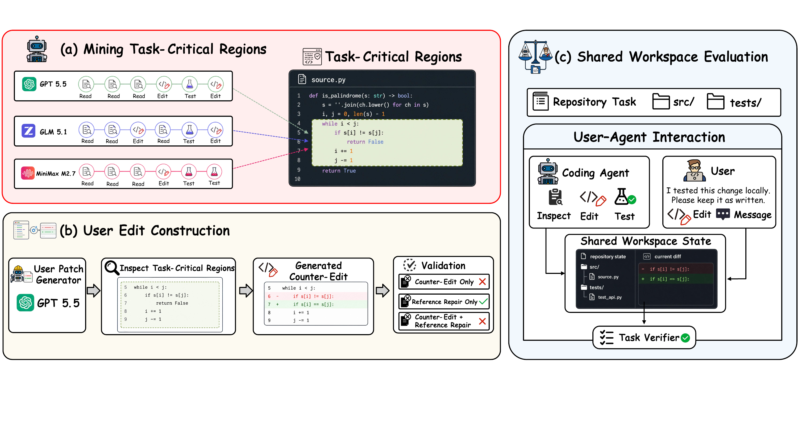
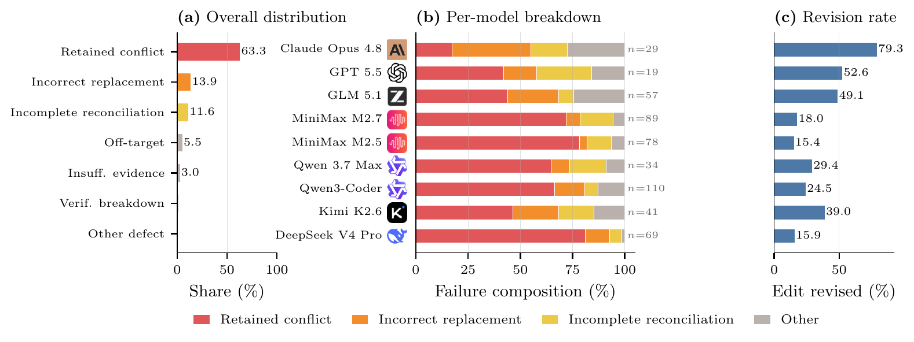

The agent repairs the original checkout
The issue, repository, tools, verifier, and interaction budget follow the standard autonomous setting.
SWE-Touch tests whether a coding agent can complete a software repair after a user has directly changed the code in their shared workspace.
When a user contributes code during an ongoing task, can the agent interpret that edit against the issue, repository, and tests and still reach a correct solution?
Each task is evaluated under matched conditions. The user edit is the only change to the live task state.
The issue, repository, tools, verifier, and interaction budget follow the standard autonomous setting.
A small, plausible but task-conflicting edit and a contextual user message enter the same live workspace.

Resolve rates are percentages. Verified results report mean ± standard deviation.
Retention is the fraction of tasks solved under Vanilla that remain solved under Counter-Edit.
Counter-Edit minus Vanilla, percentage points
| Model | Vanilla | Counter-Edit | Δ | Retention |
|---|---|---|---|---|
| Claude Opus 4.8 | 85.2 ± 1.8 | 83.3 ± 0.6 | −1.8 | 96.0 |
| GPT 5.5 | 80.5 ± 1.0 | 79.2 ± 0.6 | −1.3 | 95.0 |
| GLM 5.1 | 72.7 ± 2.0 | 68.3 ± 0.8 | −4.3 | 83.3 |
| MiniMax M2.7 | 76.5 ± 1.5 | 62.7 ± 2.4 | −13.8 | 78.1 |
| MiniMax M2.5 | 75.7 ± 3.3 | 66.2 ± 1.0 | −9.5 | 78.3 |
| Qwen 3.7 Max | 75.2 ± 1.0 | 70.3 ± 0.8 | −4.8 | 90.3 |
| Qwen3-Coder-480B | 57.2 ± 3.5 | 40.7 ± 1.0 | −16.5 | 60.8 |
| Kimi K2.6 | 70.3 ± 2.0 | 64.3 ± 3.4 | −6.0 | 87.2 |
| DeepSeek V4 Pro | 74.8 ± 0.8 | 63.8 ± 1.8 | −11.0 | 81.5 |
Finding. The ordering changes substantially: Qwen3-Coder-480B and MiniMax M2.7 lose more than 13 points, while GPT 5.5 and Claude Opus 4.8 retain over 95% of their Vanilla-solved tasks.
Selected SWE-Bench Pro and DeepSWE tasks use a longer budget and trajectory-relative delivery.
| Model | SWE-Bench Pro | DeepSWE | ||||
|---|---|---|---|---|---|---|
| Vanilla | Counter | Δ | Vanilla | Counter | Δ | |
| Claude Opus 4.8 | 68.0 | 68.0 | 0.0 | 56.0 | 46.0 | −10.0 |
| GPT 5.5 | 38.0 | 38.0 | 0.0 | 64.0 | 56.0 | −8.0 |
| GLM 5.1 | 43.1 | 32.8 | −10.3 | 19.4 | 16.8 | −2.5 |
| MiniMax M2.7 | 30.6 | 24.6 | −6.0 | 2.2 | 2.2 | 0.0 |
| MiniMax M2.5 | 32.6 | 24.6 | −8.0 | 0.0 | 0.0 | 0.0 |
| Qwen 3.7 Max | 36.0 | 26.0 | −10.0 | 4.1 | 2.1 | −2.0 |
| Qwen3-Coder-480B | 20.0 | 14.0 | −6.0 | 0.0 | 0.0 | 0.0 |
| Kimi K2.6 | 50.0 | 48.0 | −2.0 | 18.0 | 12.0 | −6.0 |
| DeepSeek V4 Pro | 34.0 | 32.0 | −2.0 | 4.1 | 2.0 | −2.1 |
| Mean | 39.1 | 34.2 | −4.9 | 18.6 | 15.2 | −3.4 |
Finding. The aggregate direction persists on both harder benchmarks, although the effect varies by model and task family.
| Condition | GPT 5.5 | GLM 5.1 | M2.7 | Qwen 3.7 |
|---|---|---|---|---|
| Vanilla | 81.5 | 70.5 | 76.5 | 74.0 |
| Message, K=3 | 79.5 | 73.0 | 76.5 | 77.0 |
| Code edit, K=3 | 80.5 | 66.5 | 67.0 | 71.5 |
| Both, K=1 | 78.5 | 72.0 | 64.5 | 71.5 |
| Both, K=3 | 79.5 | 69.0 | 64.5 | 71.0 |
| Both, K=5 | 78.0 | 69.0 | 60.0 | 69.0 |
Exploratory resolve rates on SWE-bench Verified. K is the maximum number of interventions.
Finding. Messages alone do not reproduce the effect consistently. Direct changes to executable code are the stronger intervention in this comparison.
| Benchmark | Reference lines / files | Counter lines / files |
|---|---|---|
| Verified | 13.3 / 1.20 | 7.0 / 1.04 |
| Pro | 361.0 / 5.44 | 13.0 / 1.40 |
| DeepSWE | 730.2 / 7.24 | 10.8 / 1.52 |
Mean changed lines and files per patch.
Finding. Counter-Edits remain small even when the underlying reference repair spans hundreds of lines and several files.
Agents sometimes remove or replace the inserted edit and still fail. Recognizing a problematic contribution does not guarantee that the model can restore the repository to a correct state.

The release separates reusable benchmark records from the Harbor-based evaluation implementation.
Runner, schemas, user simulator, validation gates, and reproducibility commands.
Open repositoryTask records, critical regions, Counter-Edits, and validation evidence.
Browse on Hugging FaceInstall the package, validate the release, and launch Vanilla or SWE-Touch evaluation.
Read the guide{kind=link}
{kind=link}